Your land looks rough for four plain reasons, and none of them is the shape of the terrain. This plan fixes them with AWAKEN's own code in five layers. The first layer changes your current world the moment it is built. Nothing is built yet.
You asked for less rough terrain, a more cinematic look with stones and detail, and foliage that makes the place feel real, while it still feels like Minecraft. Immersion is the priority, so every choice below is judged by what you see at eye height.
What is wrong in your own shots
I went through your four screenshots, read the code behind each look, and tested the main theory with AWAKEN's own erosion code. The numbers on the pictures match the lists beside them.
Cause 1Brown stripes
A grass block shows its dirt side wherever a step is exposed, so every hill reads as brown stairs with a thin green line on each tread. This is plain vanilla and nothing of ours touches it.
Cause 2Hard one-block steps
Every slope is a staircase in a block world. On a 35° hill, 43% of neighbouring columns differ by exactly one block. I tested whether the erosion's finest layer causes it. It does not: 43.1% with it, 43.0% without.
Cause 3Bare ground
Flat tinted lawns, one grass height, no stones, roots, litter or fallen wood. Steep slopes stay soil and show white ore streaks. Roads cut into the hill with a wall on each side and a coin-toss mosaic for a surface.
Cause 4Hard seams
Grass, dirt, path, gravel and sand meet in square edges. A path is also a sixteenth lower than the grass beside it, so even the edge reads as a tiny step.
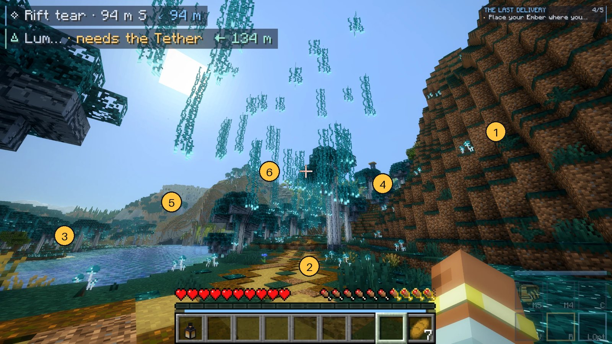
The hillside is brown stairs. Each step shows bare dirt with a thin teal line on the tread.
The road zigzags up in one-block tiles, each tile chosen by a coin toss.
The shore steps down to the water in dirt-faced steps.
The floor between the trees is one flat colour with a few plants and nothing else.
The far hills are lumpy piles with no layers of rock.
Trunks stand on bare ground with no roots, litter or fallen wood.
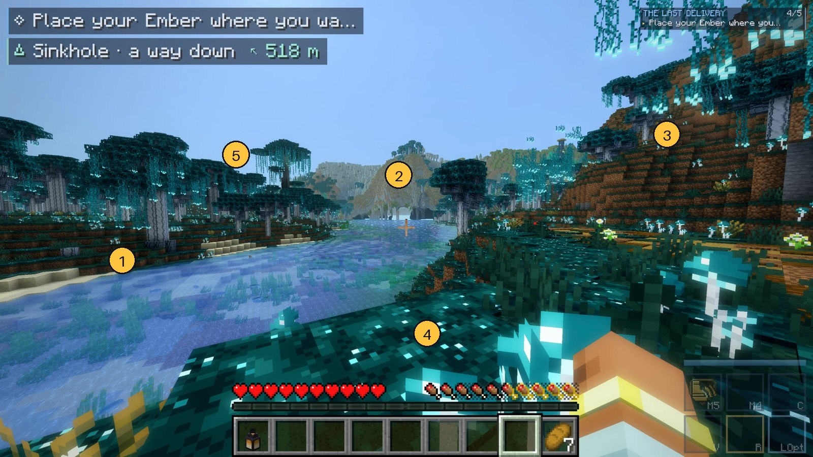
The bank is a strip of one-block dirt walls.
The mountain is a brown-green mound with no strata in it.
The right hill is terraces, each with a brown face.
The lawn is a flat carpet. One mushroom is all that lives on it.
Trees stand in even rows with nothing growing under them.
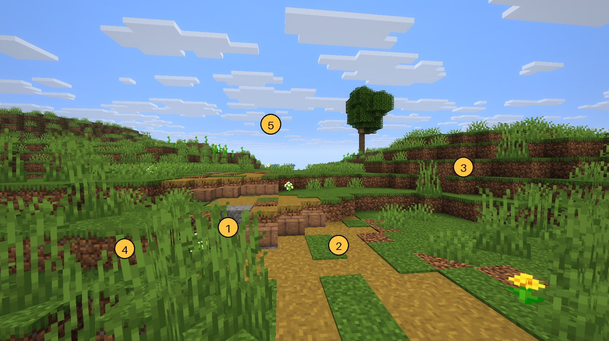
The road is cut into the slope. A vertical wall of dirt and mud brick stands beside it.
Random grass tiles sit in the path and the edges are square and ragged.
The hill is terraces. Every step is a brown face.
Bare dirt patches and thin grass, with no stones and no leaf litter.
One tree on a bare hilltop with nothing near it.
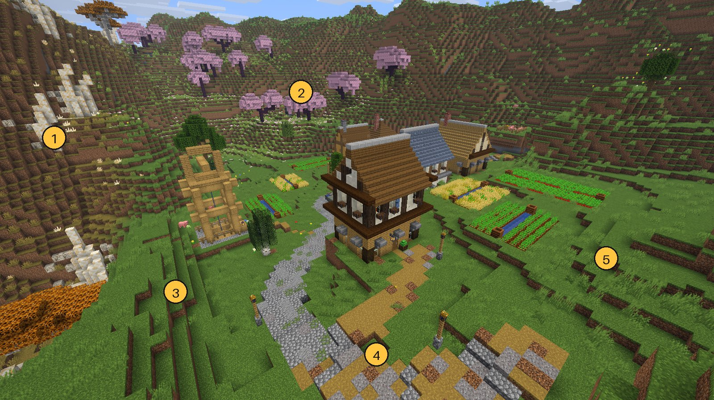
White streaks are ore blobs showing through thin soil.
Zigzag brown and green stripes. Grass grows only on the treads.
Dirt-faced terraces all around the town.
The road is a checkerboard of cobble and path.
Dark vertical seams run between the terraces on the right.
One more finding for the mountain: our rock and scree rule only runs in the mountain biomes and above height 150. A steep slope on forest or plains ground below that stays grass and dirt. That fits your mining-town shot, though the shot has no coordinates to prove it.
What the plan does to the same four places
These pictures come from a small proof renderer I wrote for this plan. It draws block worlds with the game's own textures, vanilla face shading, ambient occlusion and a soft sun shadow, from the same rules the plan would build. It has no Lens and no real Sodium lighting, so read each pair as the change, and judge the final look on the real tours.
A hillside, one layer at a time
Today
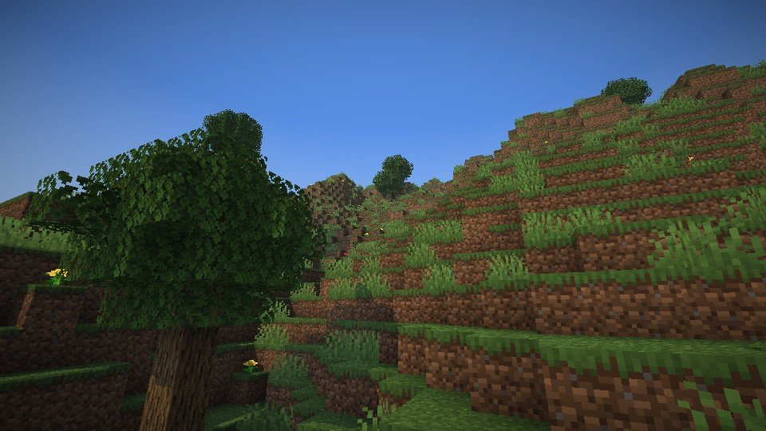
+ Seamless grass
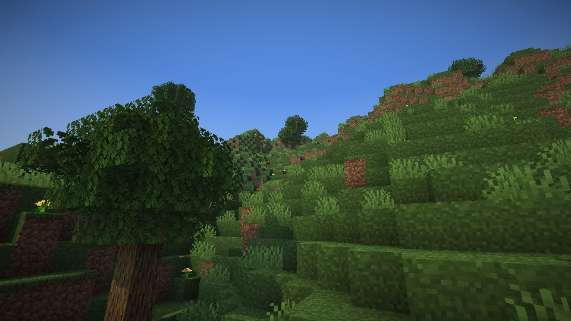
+ Half-steps
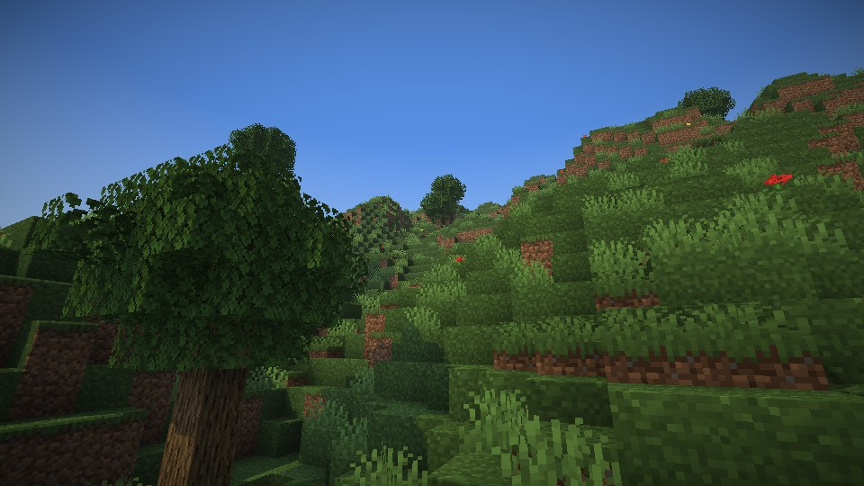
+ Cover and colour
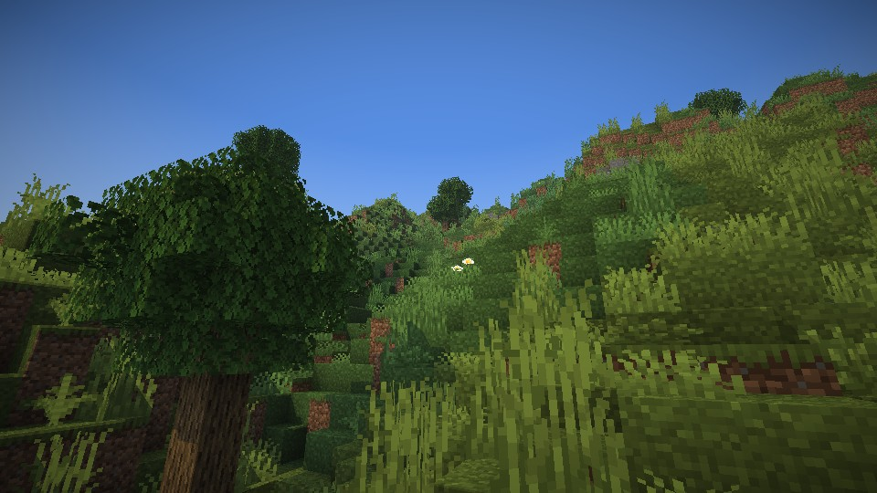
Seamless grass turns the brown stripes green wherever a step is one block high. A real cliff keeps its dirt face.
Half-steps put a half-block slab on the foot of each one-block rise. Walking up takes no jump, and the slope reads as a slope.
Cover and colour adds three grass heights, drifts of flowers, pebbles, a boulder, and a lawn colour that changes in patches.
A forest floor
Today
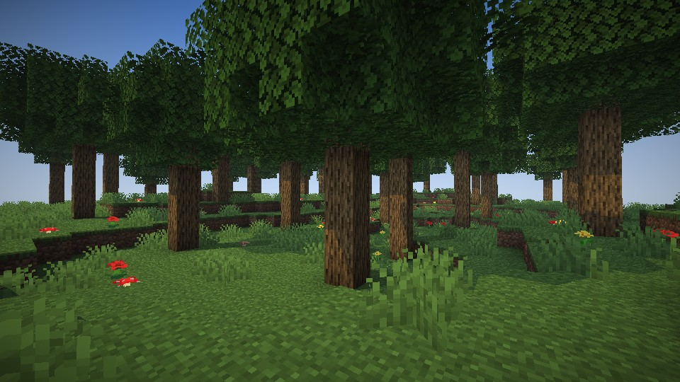
Plan
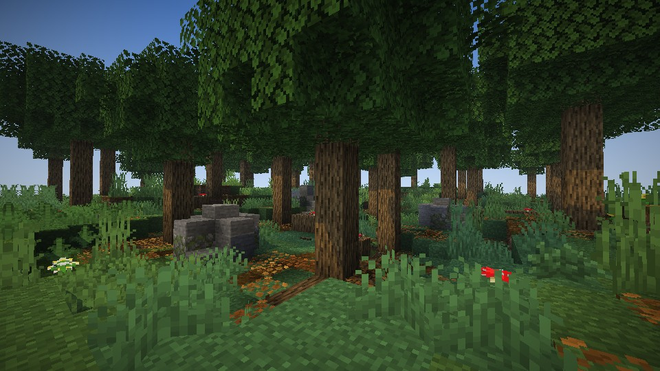
Leaf litter gathers under the oldest trees, ferns grow where the canopy is thick, and the grass thickens in the gaps. The floor changes with the light above it.
Mossy boulders with rounded edges, roots at the foot of trunks, fallen logs with mushrooms, pebbles and twigs.
Flowers come in drifts, not an even scatter.
A road over a slope
Today
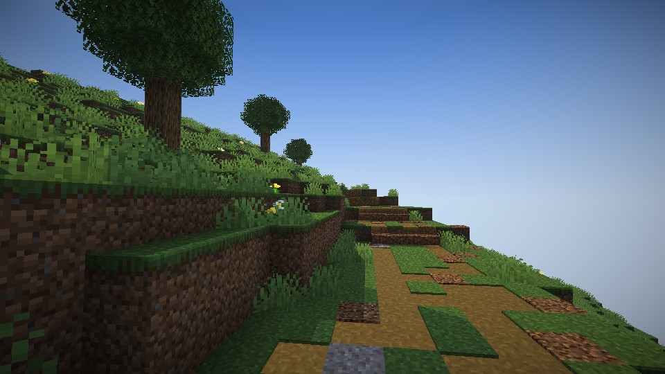
Plan
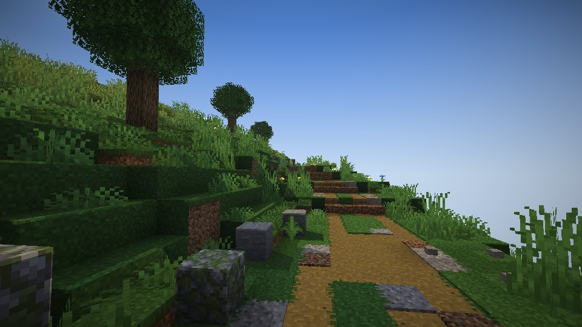
The road sits in a bank. The ground eases from the road's level to the land's over several blocks, in half-steps, instead of a wall.
The surface runs in bands along the road: two worn tracks, a grass crown that breaks now and then, gravel at the shoulders. No more coin-toss tiles.
Grass creeps over the edges, with kerb stones and pebbles beside it.
A mountain face
Today
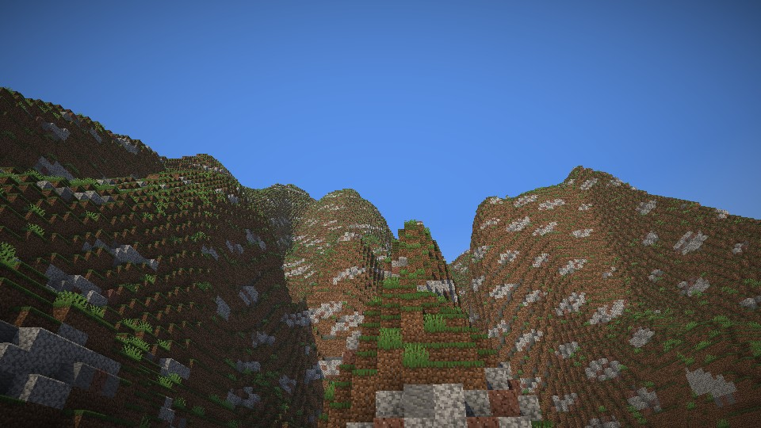
Plan
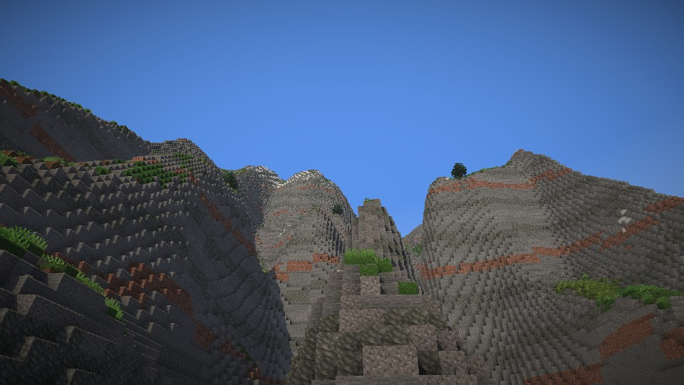
The ground follows the slope: grass where it is gentle, patches of coarse dirt and gravel as it steepens, rock with grass pockets above that, then bare rock.
Rock comes in layers of stone, andesite, tuff and granite, so a cliff has strata and the white ore streaks are covered.
Scree at the foot of cliffs, ledges, snow in layers at the snow line, and spruce in the gullies.
This is the roughest of the four pictures. The rock here is flatter and darker than the final look will be, and the strata colours and snow get tuned on real tours.
Why half-steps, and where they stop helping
The rule is small. A column that has a neighbour exactly one block higher, and no lower neighbour, gets a half-block slab on top. Nothing is ever removed, and a real cliff is left alone. It only reads the heights, so a chunk comes out the same whatever order the world generates in.
Land (bench on AWAKEN's own erosion)
Median slope
Columns raised
One-block steps
What is left
Rolling meadow
0°
20.6%
80,214 → 2,795 (−97%)
Almost nothing
Hillside
35°
23.4%
223,910 → 130,486 (−42%)
One-wide stair runs
Mountain flank
58°
2.4%
264,679 → 254,735 (−4%)
Left to the rock rules on purpose
Cost of the pass: about 3.5 nanoseconds a column, about a microsecond per chunk. A single Tectonic column read costs 0.63 ms, so the pass is invisible beside it. Above about 40° a staircase is simply the medium, so steep ground is fixed with rock and strata instead of slabs.
Where it stays Minecraft
Fine
Half-block steps. A slab is core Minecraft.
16 by 16 textures, and small models on the 16-grid with at most 12 faces.
More blocks, smaller blocks, better seams.
Colour drift, light and haze.
Out
Eighth-block layers to sculpt the ground. They pull toward a smooth mesh.
Bent or bevelled terrain, smoothed normals, parallax, textures over 16 by 16.
A different art style for the land.
The test is a screenshot at normal size. The pixel grid and the block edges are all still there, and the one thing gone is the brown stripe. If you cannot see block edges at ten metres, it has gone too far.
The five layers, in the order I would build them
Phase
What you see
Works in
Build
P0 Seamless ground
Grass wraps green down a one-block step, grass creeps onto paths and dirt, the lawn colour drifts in patches. Far views match.
Every world, at once
~3 h
P1 Soft steps
Half-block slabs on gentle ground, with plants standing inside the slab's own block so nothing floats.
New worlds
~5 h
P2 The floor
Pebbles, twigs, three grass heights, litter, ferns, flowers in drifts, boulders, roots, fallen logs, a palette for each biome.
New worlds
~5 h
P3 Mountains
Slope-led ground, strata, scree, ledges, snow in layers.
New worlds
~3 h
P4 Roads that sit in the land
Graded banks, worn tracks, soft edges, no half-slabs in streets or yards.
New worlds
~3 h
P5 The land speaks
Scrubbier and bonier ground in more dangerous regions, places for wild life to perch, footstep tags.
New worlds
~2 h
That is about 20 builder-hours at the pace the git history shows (all of AWAKEN took about 30). P0 and P3 can run side by side, then P1, then P2 and P4 together: a day to a day and a half of wall-clock. You look after P0 and after P1. The things that do not compress are those two looks, one set of about 30 small sprites, and the CI look tours. One Mac frame tour at the end.
How it fits what already exists
Far Sight and City Sight
Half a block of difference is hidden by the dissolve. The lawn colour and the slope rules use the same maths near and far, so mountains match. City Sight already draws slabs correctly. It needs one small change so wrapped grass looks the same there.
Roads, towns, Carillon
The soft pass runs before the road and settlement painters, which overwrite their own ground. So a half-slab cannot survive in a street or a yard. A test checks it.
Movement
A half slab is under the step height, so you walk up with no jump. The stair slide already treats stepped slabs as a run, so a slide now carries you down a soft hillside. Three tests cover walking, sliding and mantling a lip with a slab on it.
Trees and sway
Vanilla plants and saplings refuse a slab, so nothing floats. New plants extend the vanilla plant classes, so they sway in your wind with no change.
Lens
No new pass. Lens counts a slab as a full block, which is a half-block error at a shadow edge.
Wild life
Boulders count as bare rock and fallen logs as trunks, so frogs, squirrels and birds get new places to be.
Regions
Cover follows the region rank: lush on safe land, scrubby from D up, bones and dead wood from C up. It is one table and waits for the regions work.
Cost
The pass reads no noise. Each cover feature stays under 0.5 ms a chunk, about 1 ms in all. The forest frame budget is plus 0.3 ms at most. These are estimates until the tours measure them.
Decisions
Fifteen decisions. I recommend yes on all of them.
D1
Build the softening ourselves, and use the mods as references.
Countered's Terrain Slabs gets a one-hour look on our land. Fast Better Grass is the fallback if P0 slips. Shadowy Path Blocks only if path edges stay dark. Our ground blocks, painters and far renderers are ours, so a mod cannot know them.
Recommended: yes
D2
Build seamless ground first, client side, in every world, with an on/off setting. You look at it before P1.
The biggest visible change for the least code. It works on your current world.
Recommended: yes
D3
Half-block steps for gentle ground on new worlds, and no eighth-block layers to sculpt.
A slab is Minecraft. Layers pull toward a smooth mesh. Rolling land loses 97% of its one-block steps.
Recommended: yes
D4
Plants stand inside the slab's own block.
No floating plants and no bald patches on the slope.
Recommended: yes
D5
Slabs are real blocks you can break, carry and place. A grass slab breaks into a dirt slab, or into itself with silk touch. No recipe.
Players build with what they find, and no recipe keeps the item list clean.
Recommended: yes
D6
The soft pass runs before the painters, and roads get graded banks and bands.
No half-slab in a street or yard, and roads stop being walls.
Recommended: yes
D7
Leave Tectonic and the erosion alone.
Measured: the steps come from the block grid, not the noise.
Recommended: yes
D8
Slope-led rock and strata on every steep slope, not only in the mountain biomes.
The brown stairs and white streaks sit on slopes the rock rule never reaches.
Recommended: yes
D9
Ground cover is vanilla first: retune fallen trees, forest rocks, moss, bushes, wildflowers, dry grass and litter, in drifts. Add a small set of our own: pebbles, twigs, three grass heights, clover.
Most of it already ships with the game. Only the small things need new art.
Recommended: yes
D10
Our own boulders and outcrops with slab and stair edges, by biome.
You asked for stones. A rounded boulder is the cheapest cinematic detail.
Recommended: yes
D11
City Sight and Far Sight match the near view: wrapped sides, the same colour drift, the same slope rules.
A seam between near and far would undo the work.
Recommended: yes
D12
A slide down a soft hillside is wanted.
It is the Runner's feel on every hill, and three tests hold it.
Recommended: yes
D13
Worldgen changes ride a data pack and a feature flag, so only new worlds get them.
The Lands, Alpine and Villages packs do the same. No old chunk changes. You make a new world to see P1 onward.
Recommended: yes
D14
Cover follows the region rank, built after the regions work lands.
The regions plan says the land should speak first. This gives it a physical vocabulary with one table.
Recommended: yes
D15
Budgets: at most 0.5 ms a chunk per feature, about 1 ms in all, forest frame plus 0.3 ms. One Mac frame tour at the end, look tours on CI.
These are the SPEC budgets and your tour-queue rule.
Recommended: yes
To approve: tell the orchestrator "go with all recommendations", or name the numbers you want changed. Nothing gets built until then.